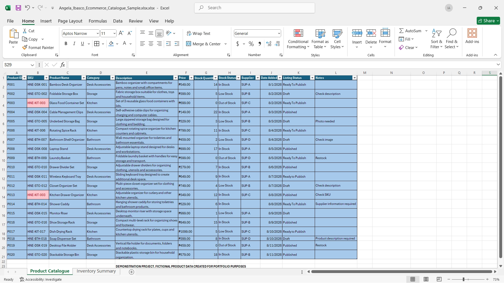
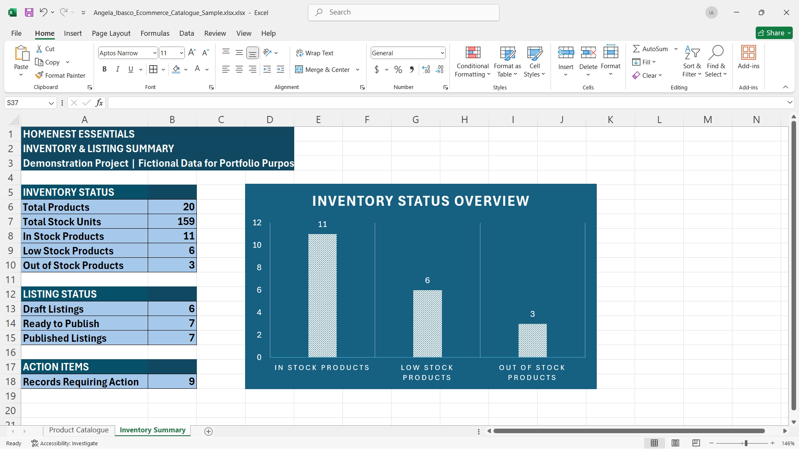
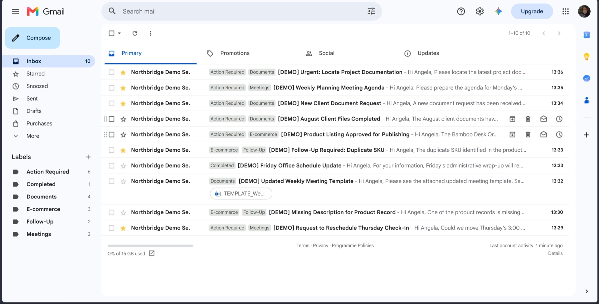
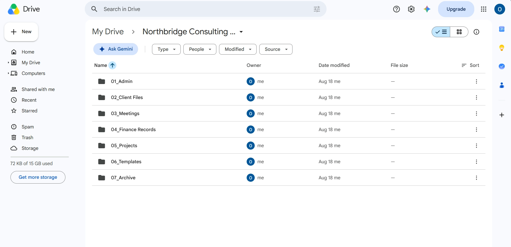
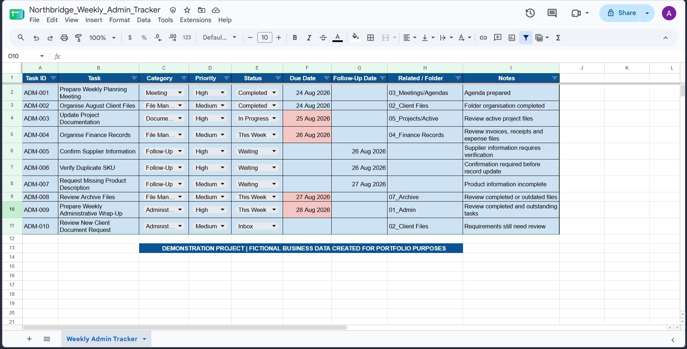
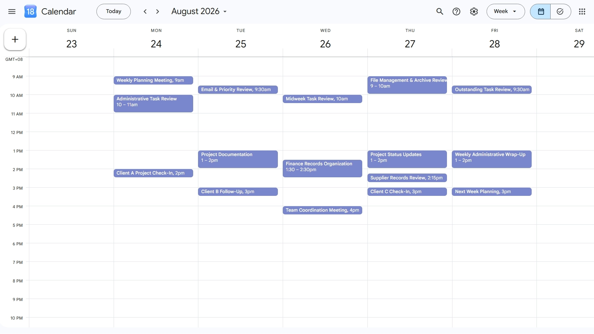
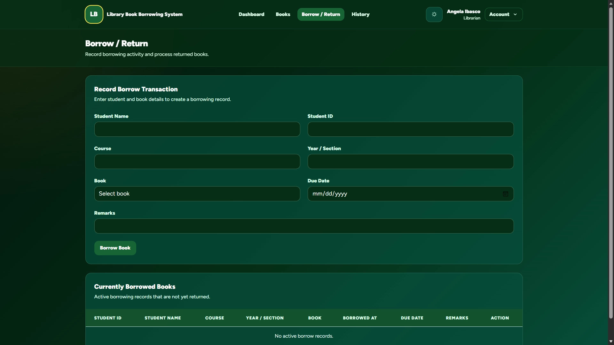
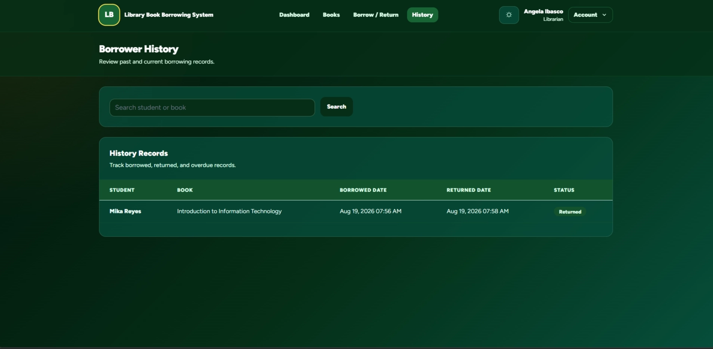

Administrative Support
Email organization, calendar management, scheduling, file management, task tracking, administrative coordination, and information organization.
Virtual Assistant · Administrative & Data Support
I’m Angela, an entry-level Virtual Assistant with an Information Technology background. I provide accurate and organized support across data, documents, email, scheduling, file management, and e-commerce workflows.
About me
I enjoy turning information and everyday administrative tasks into organized, manageable workflows. My Information Technology background has helped me develop a detail-oriented approach to working with data, digital tools, documents, and online systems.
As a Virtual Assistant, I value accuracy, clear communication, organization, and dependable execution. I am comfortable learning new platforms and processes, and I approach unfamiliar tasks by understanding the workflow first, following instructions carefully, and finding practical ways to complete the work efficiently.
Support I can provide
These support areas are based on the administrative, data, and e-commerce skills demonstrated in my portfolio projects.
Email organization, calendar management, scheduling, file management, task tracking, administrative coordination, and information organization.
Data entry, structured record management, data validation, database management, workflow organization, and information management.
Product listing, product data organization, inventory tracking, listing accuracy checks, and spreadsheet management.
Selected projects
Demonstration and systems projects showing how I approach administrative support, data organization, e-commerce tasks, and digital workflows.
Created and organized sample e-commerce product listings to demonstrate accurate data entry, product information management, and consistent listing presentation.


Created a demonstration workflow for organizing email messages and digital files to make information easier to locate, prioritize, and manage.


Created a demonstration administrative workflow for organizing schedules, tracking tasks, and maintaining structured records for day-to-day business activities.


Developed a digital library borrowing and records management system designed to organize book information, borrower records, lending transactions, return tracking, and availability status within one structured workflow.


Skills & tools
Core administrative, organizational, and digital support skills developed through academic work, independent learning, and hands-on portfolio projects.
Certifications & Technical Training
Completed technical and digital training that complements my Information Technology background and supports the way I work with online systems, data, and digital workflows.
Cisco Networking Academy · Offered by Gordon College · Completed 13 June 2025
View CertificateCisco Networking Academy · Offered by Gordon College · Completed 19 December 2025
View CertificateCisco Networking Academy · Offered by Gordon College · Completed 15 May 2026
View CertificateTechnical Education and Skills Development Authority (TESDA) · Completed 18 March 2026
View CertificateHow I work
My approach is simple: understand the work, follow the process carefully, keep information organized, and review the output before it is considered done.
I carefully review information, documents, and data to reduce errors and maintain consistency.
I prefer clear file structures, documented processes, and manageable workflows.
I am comfortable learning new tools, systems, and procedures based on the needs of the task.
Resume
View my resume for additional information about my education, technical background, and qualifications.
View / Download Resume (PDF)Contact
I’m interested in opportunities involving administrative support, data management, email and file organization, scheduling, and e-commerce assistance.